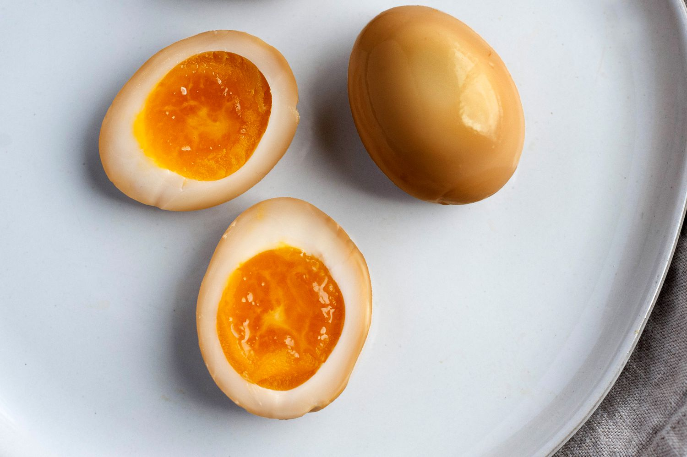

Soy Sauce Eggs

Description
boiled eggs that are marinated in soy sauce for added flavor. Its a great
way to get your protein in while adding a twisted to the standard boiled
egg.
Ingredients
- egg
- soy sauce
- rice wine
- water
Steps
- Boil your eggs in a pot til your desired tenderness
- Peel your eggs and place them in a marinating bowl.
- Add soy sauce, rice wine, and water into the bowl and let this sit in the fridge for at least 6 hrs and up to a week